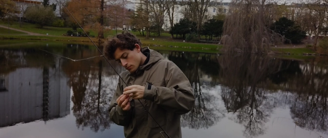
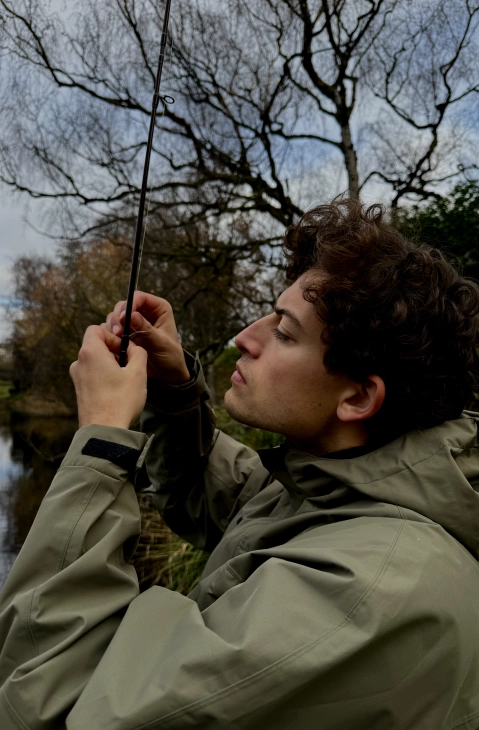
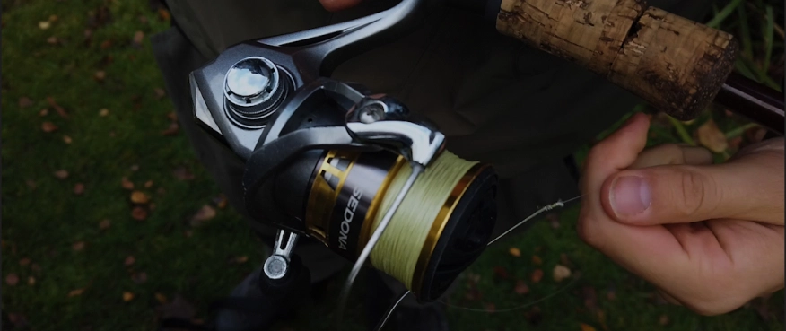
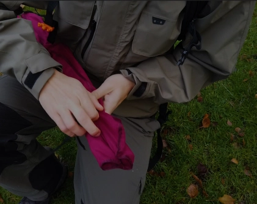
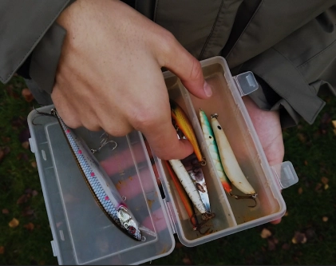

EN KROG I NATUREN
NÅR NATUREN KALDER, OG FISKEN BIDER/DET HELE STARTER VED VANDET
"Der er noget magisk ved at stå ved vandkanten, mærke vinden i ansigtet og vente tålmodigt på det øjeblik, hvor linen strammes. Fiskeri handler ikke kun om fangsten – det er en passion, der forbinder os med naturen, udfordrer vores tålmodighed og belønner os med ro og refleksion."

ØJEBLIKKE FRA VANDKANTEN



